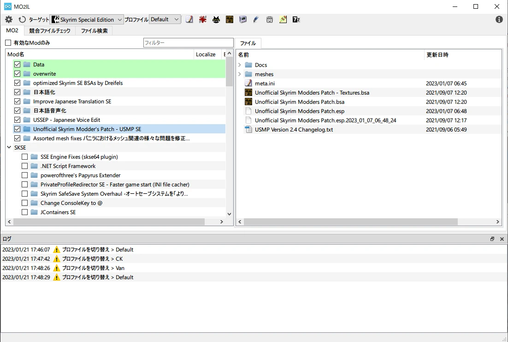
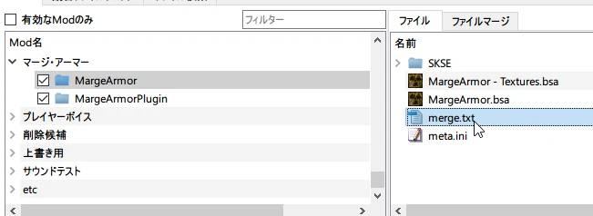
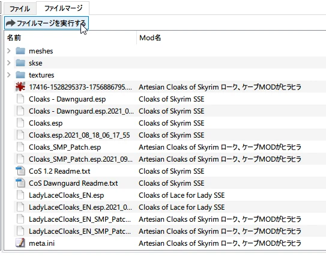
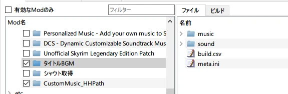
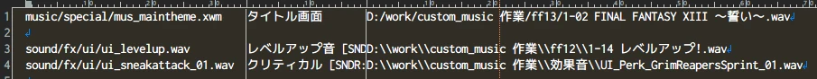

MO2IL
MO2の管理をベースに各種ツールでいろいろ編集したりするツール

機能
ツールを登録して拡張子別にファイルと関連付けして起動させる機能
競合ファイルを探す機能
ファイル検索機能
ファイルマージ機能
merge.txtを準備する

merge.txtに結合したいMODを記述する
(下に書いたMODが優先高い)

- 「ファイルマージ」からボタンを押せば出来上がり
(merge.txtが置かれた場所にファイルコピーされます)

ビルド機能
※スカイリムでしかテスト確認していません
- CreationKitの設定を行う
- Papyrusを使う場合はインポートパスの設定も忘れずに
build.csvを準備する

build.csvで「出力パス」「説明」「入力パス」を記述する
- フォーマットはタブでセパレートしたテキスト

- ボタンを押せば出来上がり

ビルド出来るもの
- wav -> xwm
- xWMAEncodeを使用して変換します
- psc -> pex
- Papyrus Compilerでコンパイルします
FOJP用の機能
- xtFOJPから移植してきた機能
- 既存テキストからXML変換機能は未実装
ダウンロード
リポジトリ
https://github.com/hananoki/MO2IL